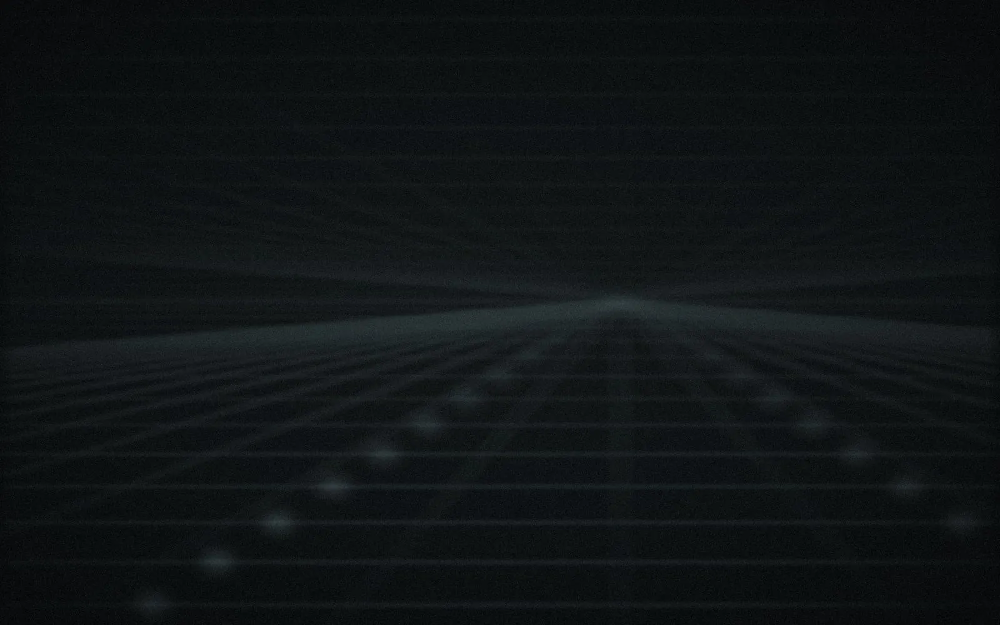

Scot & Millfield | ForgeForge :
Furnace
Crafted deeply in the Ruhr. Risers, sweeps and downlifters over 2 to 32 bars – locked to the project, with movement inside the texture, and finally as an audio file right on the track.

2–32 bars
12 sections
5 factory presets
24 bit WAV
0 samples off
01 / Installation
Set up
in Cubase
Forge comes as a ZIP: ScotMillfieldForge_<version>.zip. A .vst3 is a folder. Load new versions in a test project only.
ScotMillfieldForge.vst3 to C:\Program Files\Common Files\VST3\.Needs administrator approval · delete an old ScotMillfieldWorkbench.vst3 if present%TEMP%\SM-Forge\ and clears them after seven days.02 / Interface
Forge :
Furnace
A riser lives not only from getting louder and brighter, but from movement in the sound. Furnace describes every moving target as a curve from start to end. Hover or tap a number to see what it does. The interface itself is in German; this page quotes its labels.

- 1← Forge Back to the Forge start page. The module keeps running and still reacts to MIDI.
- 2Presets Step through presets with ‹ ›, click the name for the full list. „Speichern …“ saves your own preset, „Löschen“ deletes it.
- 3Länge · Length Riser length in bars. It always ends exactly on the target bar.
- 4Richtung · Direction „Auf“ rises; „Ab“ turns it into a downlifter by running every curve backwards. Switching also swaps the default length (8 ↔ 2 bars).
- 5Grundton · Root note Key of the tone layer for preview and export. A MIDI note overrides it. Not stored in presets – it belongs to the song.
- 6Tempo Host tempo and time signature. In the standalone version, drag to change the tempo; double-click resets to 124 BPM.
- 7Vorhören · Preview Plays the riser without a MIDI note, on the root note. Turns into „Stopp“ while playing.
- 8Curve view Every moving target over the bars: cutoff, volume, pitch and LFO rate, each in its own colour. Drag the handles to edit; play position and status included.
- 9Tabs The sections are grouped in four tabs: Klang (sound), Modulation, Textur (texture) and Raum & Ende (space & end).
- 10Waveform The pre-rendered riser on a dB scale, with length, root note and peak level. Turns red above 0 dBFS.
- 11Auf Audiospur ziehen · Drag to track Drag the finished WAV straight onto an audio track in Cubase. A green dot means ready.
- 12Speichern unter … · Save as Saves a copy of the WAV anywhere on disk.
Triggering
- MIDI note: every note restarts the riser. The length comes from „Länge“, not from the note length. Furnace is monophonic.
- „Vorhören“ (preview): plays the riser without a note, on the „Grundton“ (root note). While it plays, the button reads „Stopp“.
- Root note: sets the pitch of the tone layer for preview and export (default C3). A played MIDI note overrides it. The root note belongs to the song and is not stored in presets.
Locked to the project
- While the transport runs, Furnace follows the song position (PPQ) – tempo automation included. The riser ends exactly on the target bar; the start is sample-accurate.
- Without transport (stopped, or standalone) Furnace counts time at the host tempo. In the standalone version you set the tempo by dragging.
- If playback jumps back (cycle) or by more than one bar, the riser stops with a short fade.
Direction
„Auf“ (up) is the classic riser. „Ab“ (down) turns it into a downlifter: every curve runs backwards – bright and loud first, dark and quiet at the end. Switching changes the default length from 8 to 2 bars.
- 1Legend Cutoff blue, volume violet, pitch green, LFO rate orange. Pitch appears when the tone layer is on, LFO rate when the LFO has depth.
- 2Start Drag a left handle up or down to set the start value of that curve.
- 3Curve shape Drag the hollow middle handle: up makes the curve move early, down keeps it slow and fast at the end – the classic riser.
- 4End Drag a right handle to set the end value. Double-click any handle to reset it.
- 5Play position The white line follows the riser while it plays – from MIDI, from „Vorhören“ or with the song.
- 6Status „Takt 4 / 8“ while playing, „Klingt aus“ in the ring-out tail, „Wartet auf Note“ when idle.
Curves
Every moving target has a start value, an end value and a curve shape between −1 and +1. Positive values rise slowly first, then fast (the typical riser); negative ones the other way round. Cutoff and LFO rate move logarithmically, volume in dB, pitch in semitones. Below every start/end pair a small slider shows the shape.
Controls
- Knobs: drag vertically, Ctrl + drag for fine steps, double-click resets to the default, the mouse wheel steps.
- Segment controls (length, filter type …): click a segment.
- Every change is a gesture in Cubase: undoable and automatable. All sound parameters appear in the automation as „Furnace …“.
- Greyed-out areas (tone off, layer off, delay off) stay editable.
03 / Tab Klang
Source, filter,
volume
Noise and, optionally, a tone run through the filter together. Sections 01 to 04: Noise, Ton (tone), Filter, Lautstärke (volume).
- 1Typ · Noise type „Weiß“ (white) or „Rosa“ (pink). Pink is matched in loudness, so switching does not jump.
- 2Seed Start value of the random generator. The same seed gives the same noise in every preview and in the export.
- 3Pegel · Noise level Level of the noise. −9 dB leaves headroom for the resonance peak at the end.
- 4Farbe · Colour Tilt around 1 kHz: −1 lows only, 0 neutral, +1 highs only. Dark to bright supports the filter sweep.
- 5Ton · Tone layer Adds a tone to the noise. Both run through the filter together.
- 6Wellenform · Waveform Saw, Supersaw, Square or Sine. Saw and square are band-limited (PolyBLEP).
- 7Stimmen · Detune Supersaw only: up to seven voices, detuned symmetrically and spread across the stereo field.
- 8Pegel · Tone level Level of the tone against the noise.
- 9Pitch Pitch in semitones relative to the note or the root note, with its own curve. The green curve in the curve view.
- 10Typ · Filter type Low-pass or high-pass with 12 or 24 dB per octave, or band-pass.
- 11Cutoff The actual sweep, on a logarithmic scale. The blue curve.
- 12Resonanz · Resonance Emphasis at the cutoff frequency, rising along.
- 13Curve shape Below every start/end pair: the shape of that curve, −1 to +1. Positive starts slow and ends fast; the icon on the left shows it.
- 14Lautstärke · Volume Volume over the riser in dB. The violet curve.
- 15Velocity → Lautstärke Lets the note velocity scale the volume.
04 / Tab Modulation
LFO, ducking,
stereo
Movement in time: an accelerating LFO, pumping on the project grid and a stereo image that swings faster and faster. Sections 05 to 07.

- 1Form · LFO shape Sine, triangle, saw, square or sample & hold. Sample & hold repeats with the seed.
- 2Ziel · Target What the LFO moves: cutoff (±2 octaves at full depth), volume („Laut“) or panorama.
- 3Takt · Sync „Sync“ follows the song tempo in note values, „Frei“ (free) runs in Hz.
- 4Rate The LFO accelerates from start to end; the phase runs on, so there are no jumps. The orange curve.
- 5Tiefe · Depth How strongly the LFO acts, with its own curve.
- 6Raster · Ducking grid Sidechain-style pumping on quarter or eighth notes – always on the beats of the song, even when the note starts off the grid.
- 7Tiefe · Ducking depth How deep each duck goes, from start to end. Off by default; 60 – 80 % at the end for a pumping riser.
- 8Release Part of the note value over which the level comes back. A 2 ms attack avoids clicks.
- 9Auto-Pan Rate The riser swings between left and right, faster and faster.
- 10Auto-Pan Tiefe · Depth Width of the swing. Keep it subtle to stay mono-compatible.
05 / Tab Textur
Movement
in the sound
The wandering hiss and a second layer that comes in later – so the riser does not just get louder, it lives. Sections 08 and 09.

- 1Modus · Mode Phaser: six all-pass stages, moving notches. „Kamm“ (comb): metallic, tonal resonances whose pitch follows the frequency curve.
- 2Frequenz · Frequency Where the effect sits, moving logarithmically from start to end.
- 3Mix Amount of the effect, growing with the riser.
- 4Feedback Higher means sharper and more resonant.
- 5Schicht · Second layer A second noise band with its own band-pass filter and its own random stream.
- 6Pegel · Level Level of the second layer at the target bar.
- 7Einsatz · Entry Point of the riser where the layer comes in; from there it rises to the target bar.
- 8Resonanz · Resonance How narrow and sharp the band is.
- 9Frequenz · Band frequency Centre of the band with its own curve.
06 / Tab Raum & Ende
Space, delay,
end
The riser opens up towards the end. And it either stops hard on the bar – or rings out with a tail. Sections 10 to 12.

- 1Breite · Width Stereo width via mid/side: 0 % mono, 100 % unchanged, 200 % double side signal.
- 2Größe · Room size Size and decay of the reverb.
- 3Hall-Anteil · Reverb amount Wet/dry balance of the reverb, from start to end – the riser opens up towards the drop.
- 4Delay Ping-pong echo in time; the repeats get gently darker.
- 5Zeit · Time Delay time as a note value, like the LFO rate.
- 6Feedback Number of repeats.
- 7Anteil · Amount Level of the echoes.
- 8Ende · End „Hart“ (hard): cut exactly on the target bar with a 10 ms fade. „Ausklingen“ (ring out): the riser ends on the bar, reverb and delay keep sounding.
- 9Fahne · Tail How long it rings out with „Ausklingen“. The export gets longer by the same amount.
- 10Gain Output level of the riser.
- 11Soft-Clip Gentle saturation that keeps peaks below 0 dBFS. Off by default, so nothing is coloured by accident.

07 / Export
Onto the
audio track
Preview = export: the file comes from the same engine with the same seed as the preview – identical sample by sample.

- 1Info line Length in bars, tempo, root note, sample rate and duration of the file.
- 2Spitze · Peak Peak level of the file. No normalisation – above 0 dBFS it turns red.
- 3Waveform Envelope of the pre-rendered riser on a dB scale (−60 to 0 dB), so the quiet start is visible too.
- 4Auf Audiospur ziehen · Drag to track Drag onto an audio track. „Rechnet …“ (orange) while rendering, „Bereit“ (green) when ready.
- 5Speichern unter … · Save as Saves a copy of the WAV wherever you like.
How it works
- Shape the sound. Furnace re-renders in the background 0.3 s after the last change („Rechnet …“, then „Bereit“).
- Drag the tile „Auf Audiospur ziehen“ onto an audio track in Cubase – ideally to the start of a bar.
- Or use „Speichern unter …“ for a copy anywhere you like.
The file
- WAV, 24 bit, stereo, no normalisation. If the peak is above 0 dBFS, it is shown in red.
- Project tempo and sample rate (standalone: 48 kHz). Sample-accurate length: bars × beats per bar × 60 / BPM × sample rate, plus the tail with „Ausklingen“.
- Name:
Riser_8Bars_124BPM_A2_Tonal-Supersaw_1.wav– bars, tempo, root note, preset, seed.
Tempo automation
The export uses a fixed tempo. If the project tempo changes during playback, the waveform says so: for the exact length, render the instrument track with Render in Place in Cubase – during playback the riser follows tempo automation precisely anyway.
08 / Presets
Factory presets &
your own sounds
Presets store the sound, not the song: the root note stays when you load one. All factory presets stay below 0 dBFS.

- 1‹ Previous Loads the previous preset.
- 2Preset name Click to open the list with „Werkspresets“ (factory) and „Eigene Presets“ (yours). „Geändert“ appears as soon as the sound differs from the preset.
- 3Next › Loads the next preset.
- 4Speichern … · Save Saves the current sound under a name. Same name → asks before replacing.
- 5Löschen · Delete Deletes the loaded preset – only your own presets, never factory ones. The sound stays as it is.
Your own presets
- „Speichern …“ stores the current sound under a name in „Eigene Presets“. Same name → it asks „Ersetzen?“ (replace).
- Location:
Documents\Scot & Millfield Forge\Presets\Furnaceas XML – „Preset-Ordner öffnen“ in the menu takes you there. - „Löschen“ only works on your own presets; the current sound stays as it is.
- The project remembers the last preset loaded; its name also goes into the file name of the export.
09 / Tips
When something
gets stuck
Waveform is a flat line
The riser is very quiet or silent – often both cutoff points sit at the bottom. Double-click the handles in the curve view or load a factory preset.
No sound on preview
In the standalone version, choose an output device under “Options” (Windows Audio is fine). In Cubase: track selected, monitoring on.
Riser stops in cycle
On purpose: when playback jumps back, Furnace stops and restarts with the next note. Put the note at the start of the cycle range.
Window too small
Drag the window anywhere from 900 × 600 to 1600 × 1000. If it is too low, the page scrolls instead of squeezing.